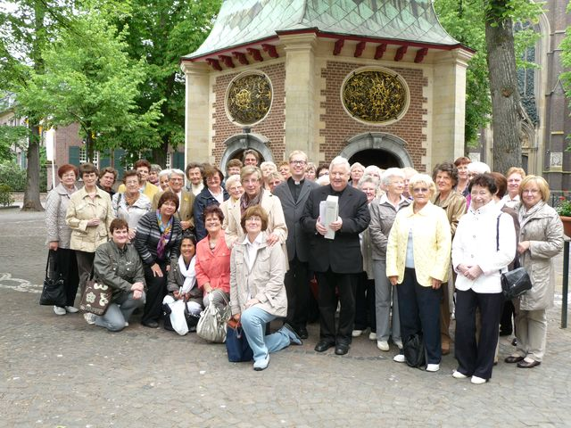
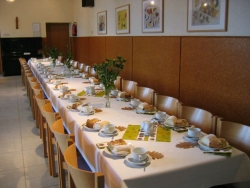
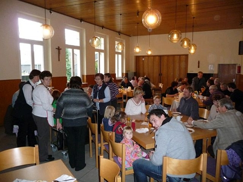
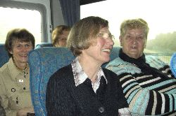

Monika Heidemann
Die Leitung unserer kfd-Frauengemeinschaft liegt in den Händen von
Frau Monika Heidemann, Tel. (0 23 39) 22 54.
Ansprechpartnerin für den Frauenkreis ist Frau Elisabeth Graf, Tel.: (23 32) 8 23 58
Monika Heidemann
Die Leitung unserer kfd-Frauengemeinschaft liegt in den Händen von
Frau Monika Heidemann, Tel. (0 23 39) 22 54.
Ansprechpartnerin für den Frauenkreis ist Frau Elisabeth Graf, Tel.: (23 32) 8 23 58
Die kfd unserer Kirchengemeinde feierte in der Woche vom 18. bis 22. Mai 2011 ihr 100-jähriges Bestehen.
Als Auftakt zu dieser Festwoche fand am Mittwoch, den 18.05. eine Wallfahrt nach Kevelaer statt, wo die aus mehr als 40 Teilnehmerinnen bestehende Reisegruppe den ehemaligen Pfarrer von St. Josef – Ludger Knaden – (1986 – 1991) trafen.
|  | |
| Gruppe vor der Gnadenkapelle mit Pastor B. Schmelz und Pfr. i.R. L. Knaden (v.l.) |
Im Rahmen der Feiern zu unserem 100-jährigen Bestehen haben wir ein abwechslungsreiches Programm zusammengestellt, das zu Gebet, zu Dank und zu gemeinsamem Handeln Impulse setzt.
Mittwoch, den 18.Mai
An diesem Tag wollen wir eine Frauenwallfahrt nach Kevelaer unternehmen. Die Abfahrt mit dem Reisebus ab der Kirche St. Josef ist für 8.15 Uhr vorgesehen, so dass wir um 11.00 Uhr mit unserem ehemaligen Pfarrer Ludger Knaden (1986-1991) in Kevelaer eine Hl. Messe in der Kerzenkapelle feiern können.
Anschließend werden wir im Restaurant „Goldener Schwan“ gemeinsam zu Mittag essen. Außderdem laden wir für 15.00 Uhr zur Teilnahme an der Pilgerandacht ein. Zeit zur freien Verfügung besteht ebenfalls.
Gegen 17.00 Uhr ist es dann an der Zeit, die Rückfahrt nach Haßlinghausen anzutreten.
Da sich bereits über 40 Frauen zur Teilnahme an dieser Jubiläumsfrauenwallfahrt angemeldet, sind nur noch einige wenige Plätze im Bus frei.
Freitag, den 20. Mai
Am Freitag, 20. Mai, feiern wir um 15.00 Uhr eine Hl. Messe für die kfd. Anschließend treffen sich die kfd-Frauen zu Kaffee, Kuchen und Erbeerbowle im Gemeindeheim. Unser früherer Pfarrer Franz Heister (1991-202) wird zu Gast sein und in der Hl. Messe auch die Predigt halten.
Sonntag, den 22. Mai
Nach der Festmesse um 11.15 Uhr haben wir die Gemeinde und geladene Gäste zu einem offiziellen Empfang eingeladen. Dabei werden wir neben Fingerfood auch Sekt, Apfelschorle oder Mineralwasser reichen.
M. Heidemann
05.05.2011
Be 06.05.2011
Am 31. März 2011 verbrachten 25 kfd-Frauen aus unserer Gemeinde ihren diesjährigen Besinnungstag traditionell bei den Schwestern zum Zeugnis der Liebe Christi im Antoniusheim in Hattingen-Bredenscheid.
Mehr…
Am Veilchendienstag um 15.00 Uhr passte keine Maus mehr in den Gemeindesaal. Rund 80 Frauen sorgten bei bester Stimmung für ein buntes Bild.
 |
|
| Nach Kaffee und Kuchen kann nun die „Sitzung“ beginnen |
| Sprockhövel, im Februar 2011 |
Einladung Mehr…
|  | Tische bleiben leer! Die für den 16.12.2010 geplante Weihnachtsfeier der kfd fällt leider aus, weil für den morgigen Donnerstag sehr starke Schneefälle angekündigt worden sind und deshalb mit erheblichen Verkehrsproblemen zu rechnen sein wird. |
| Festlich gedeckte Tische |
Be 15.12.2010
Am 7. November 2010 lag die Organisation des i. d. R. viermal jährlich stattfindenden Imbisses nach der 11.15 Uhr-Sonntagsmesse in den bewährten Händen der Frauen unserer kfd.
|  | |
| Während die ersten Gäste bereits speisen (im Hintergrund), warten noch einige auf die Suppenausgabe. |
Zum nächsten Mittagsimbiss
am Sonntag, den 07.11.2010 um 12.15 Uhr
(im Anschluss an die Hl. Messe um 11.15 Uhr)
lädt die kfd die Gemeinde ganz herzlich ein!
Wir werden eine kräftige Gulaschsuppe und ein reichhaltiges Nachtisch-Büfett aus jeweils eigener Produktion serviert bekommen.
Be 05.11.2010
|  | 13 Frauen des Frauenkreises und sechs Gäste unternahmen am 04.09.2010 eine Fahrt nach Koblenz und zum Kloster Arenberg. |
| Wohlgelaunt ist man schon bei der Reise |
{kind=link}